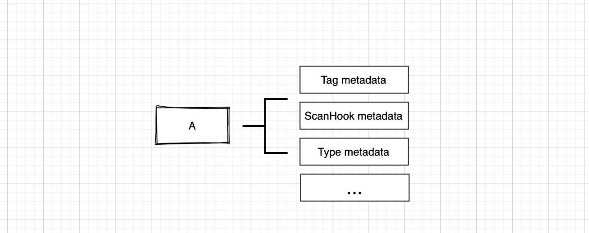
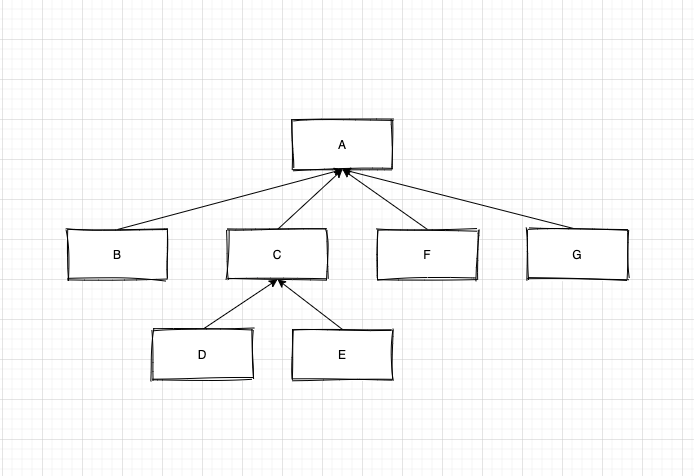
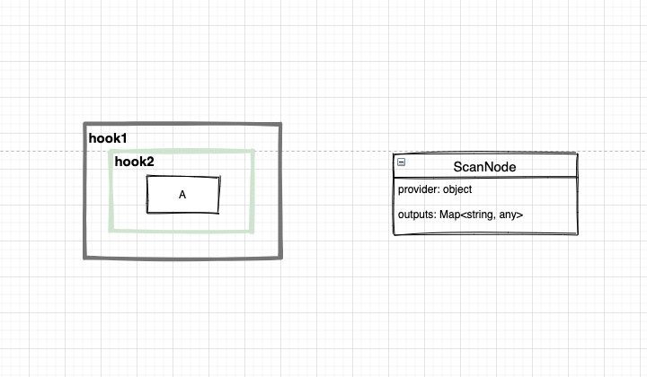
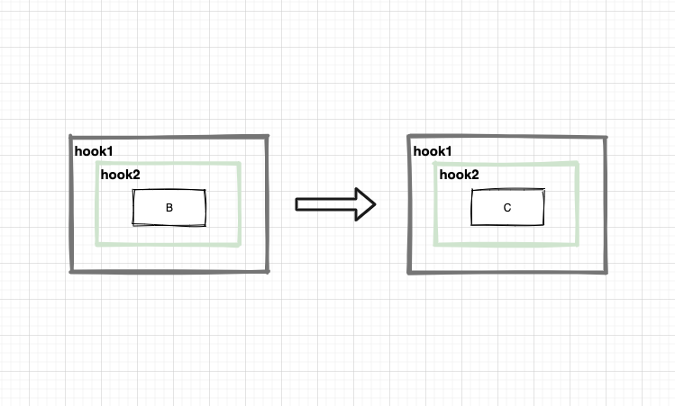
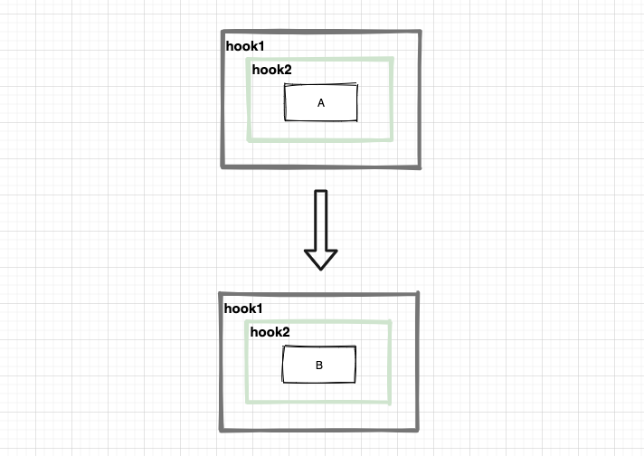
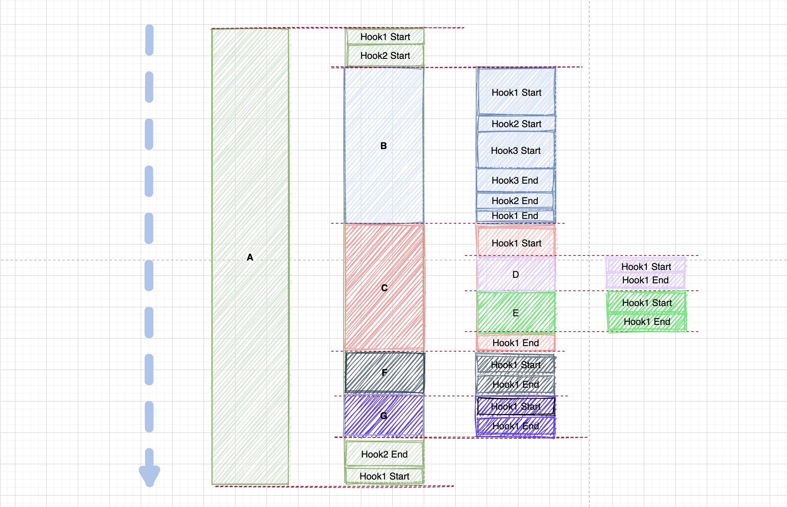

https://augejs.github.io/provider-scanner/
provider-scanner is a Provider's metadata scan framework for nodeJs which is base on javascript Reflect.defineMetadata.
How To Use
npm i @augejs/provider-scannerWhat is a Provider
To be honest, I don't know what a Provider exactly is. Maybe an Entity, a File, a structure, a component, a service, or a string. What ever, it can be defined with kinds of metadata.
The provider-scanner just focus on the scan process with kinds of metadata. Finally the result is what we want.
import { Metadata } from '@augejs/provider-scanner';
const employee = {
fullName: 'xxxx',
age: 12,
headImageUrl: 'xxxx',
};
// here the employee structure consider as a provider
Metadata.defineMetadata(Metadata,
{
reporter: 'xxx',
messageOwner: 'xxx'
}, employee);
// here we add a metadata to the employee structure.A Provider can store kinds of metadata by using Reflect.defineMetadata. (Also this behavior can be used by Decorator).

Organize Provider
Let's take a look at below diagram, it a tree of Provider, I think the tree structure is a good idea to organize things, thinking about the user-interface elements, it's a tree structure. thinking about the computer file system, it's a tree structure.

If the diagram means a school then the
Providermeans teachers and students.If the diagram means a program then the
Providermeans logic unit.
ParentMetadata
Here is a Parent Metadata which can define the children metadata to Provider
import { ParentMetadata } from '@augejs/provider-scanner';
const employee = {
fullName: 'xxxx',
age: 12,
headImageUrl: 'xxxx',
};
// here the employee structure consider as a provider
const manager = {
fullName: 'xxxx',
age: 54,
headImageUrl: 'xxxx',
};
// here the manager structure consider as a provider
ParentMetadata.defineMetadata(
[
employee,
], manager);
// here we add the employee to the manager as this child node.
// we can easily use the `ParentMetadata` to build a tree structure which is composite of `providers` just the above diagram.ScanHookMetadata
Here is a ScanHookMetadata which can define the metadata hooks to Provider.
And the hook will execute in scan process.

Single Provider Hooks Execute Model
Go back to Provider , Maybe we need do some logic process on Provider maybe process data, create new object, etc. The below diagram show the idea. Each logic process is call a hook, hook can be nested, and all hooks of Provider share the data structure ScanNode which can store some process results for current Provider

The hook execute order is A hook1-pre -> A hook2-pre -> A hook2-after->A hook1-after
The hook idea here is from KOA, it just a middleware in KOA.
async (context: any, next:Function) {
// some logic before
await next();
// some logic after
}The context here can get the current process ScanNode.

Maybe this diagram can explain how a middleware works.
Sibling Provider Hooks Execute Model
Provider C is sibling of provide B

The hook execute order is B hooks -> C hooks
Parent Provider Hooks Execute Model
Provider A is parent of Provider B

The hook execute order is is A hook1-pre -> A hook2-pre -> B hooks -> A hook2-after->A hook1-after
the B hooks seem is inner A
So finally, the scanner go through the provider tree and execute all the hooks around the provide. You can do every thing you want base on provider metadata and hooks to build anything.

This is the
Provide Tree(above diagram) scan execute order. It's like program function execute process right?